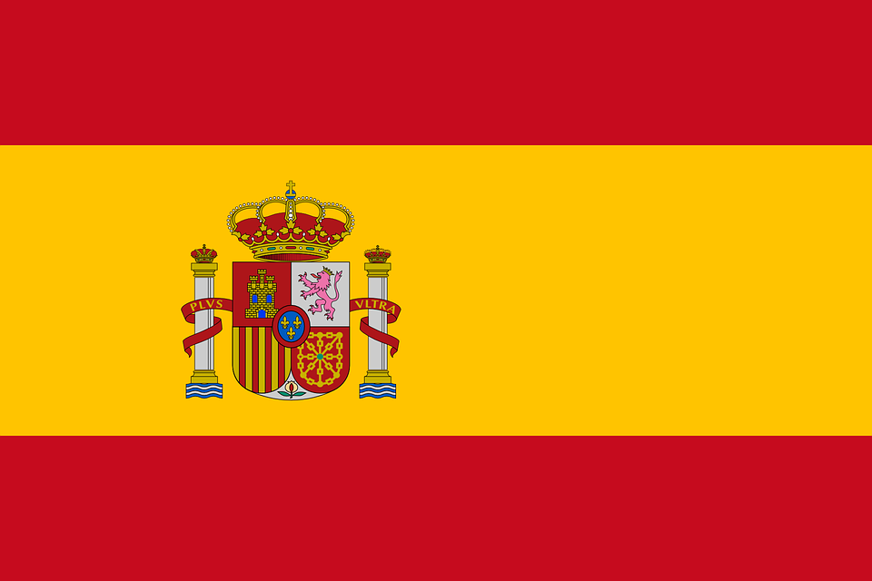

Espanja:
Tietoa:
Pääkaupunki: Madrid
Valuutta: Euro €
Valtiomuoto: parlamentaarinen monarkia
Kuningas: Felipe VI

Pinta-ala: Yhteensä 504 645 km²
Viralliset kielet: espanja, alueellisesti myös katalaani (tai valencia), galicia, baski ja araneesi.
Lähteet: WikipediaEspanjan lippu:
Suurimmat kaupungit:
| Kaupunki | Asukasluku |
|---|---|
| 1. Madrid | 3 165 541 |
| 2. Barcelona | 1 608 746 |
| 3. Valencia | 790 201 |
| 4. Sevilla | 690 566 |
Maantiede
Espanja sijaitsee Pyreneiden niemimaalla. Pohjoisessa maata rajoittaa Pyreneiden vuorijono, ja etelässä Välimeren rannikon erottaa sisämaasta Sierra Nevadan vuoristo. Pääkaupunki Madrid sijaitsee keskusylängöllä 650 metrin korkeudessa. Yli 2 000 metrin korkuisia vuoria on useita, korkeimmat huiput kohoavat yli 3 000 metriin.
Härkätaistelu
Härkätaistelu on Espanjassa perinteinen ja suosittu kansanhuvi sekä taide- ja kulttuuriperinteen muoto. Ala työllistää maassa suoraan tai välillisesti neljännesmiljoona ihmistä. Härkätaistelun suosio on viime vuosikymmeninä kuitenkin laskenut aiemmasta ja sitä on arvosteltu. Myös Pamplonan heinäkuisen San Fermín -festivaalin härkäjuoksut ovat suuri mediatapahtuma.
Kuva Fuengirolasta